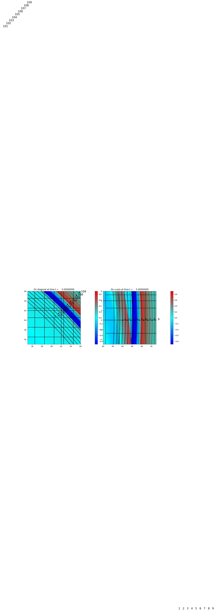

< < < Index > > >

Image source: /Users/rjl/git/clawpack/apps/tsunami/bowl_radial_fgmax/_plots/frame0005fig10.png
Other figures at this time: pcolor Zoom All Figures
Other frames: 0 1 2 3 4 5 All Frames